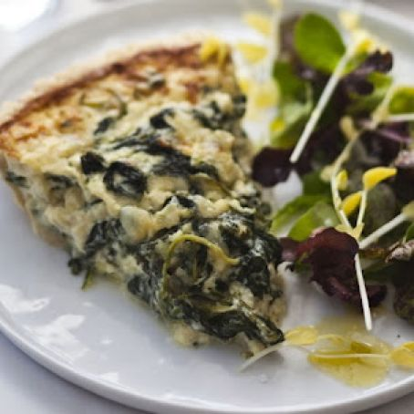

White House Spinach Pie
Description
This delicious, cheesy spinach pie recipe comes courtesy of former first lady Michelle Obama herself from her book American Grown: The Story of the White House Kitchen Garden and Gardens Across America.
Ingredients
- 1 (9-inch) unbaked pie crust
- 2 tablespoons olive oil
- 6 cloves garlic, minced
- 1 small onion, chopped
- 1 pound fresh spinach
- salt and pepper, to taste
- 2 large eggs, beaten
- 1 cup half and half
- 1 teaspoons lemon zest, grated
- 1 teaspoons fresh thyme, chopped
- 6 ounce feta cheese, crumbled
- 8 ounce swiss cheese, grated
Steps
- Preheat the oven to 375 degrees. Carefully place pie crust into an oven-safe pie plate.
- In a medium skillet over medium heat, drizzle in the olive oil. Add garlic and onion and saute until translucent, 5 to 7 minutes. Do not let the garlic burn. Add the spinach a little at a time and cook until wilted. Season with salt and pepper. Set aside to cool.
- In a medium bowl, whisk together the eggs and half and half. Add lemon zest and thyme. Add spinach, feta cheese, and half the swiss. Mix until well combined. Season with salt and pepper.
- Pour the mixture carefully onto the pie crust and evenly sprinkle remaining swiss cheese over top.
- Bake for about 40 minutes or until the center is set. Cool for at least 10 minutes before serving.